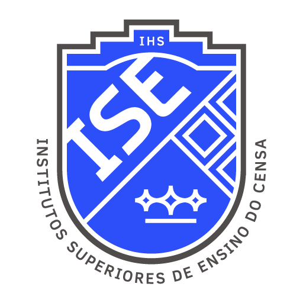
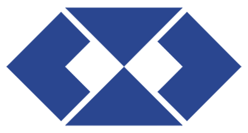
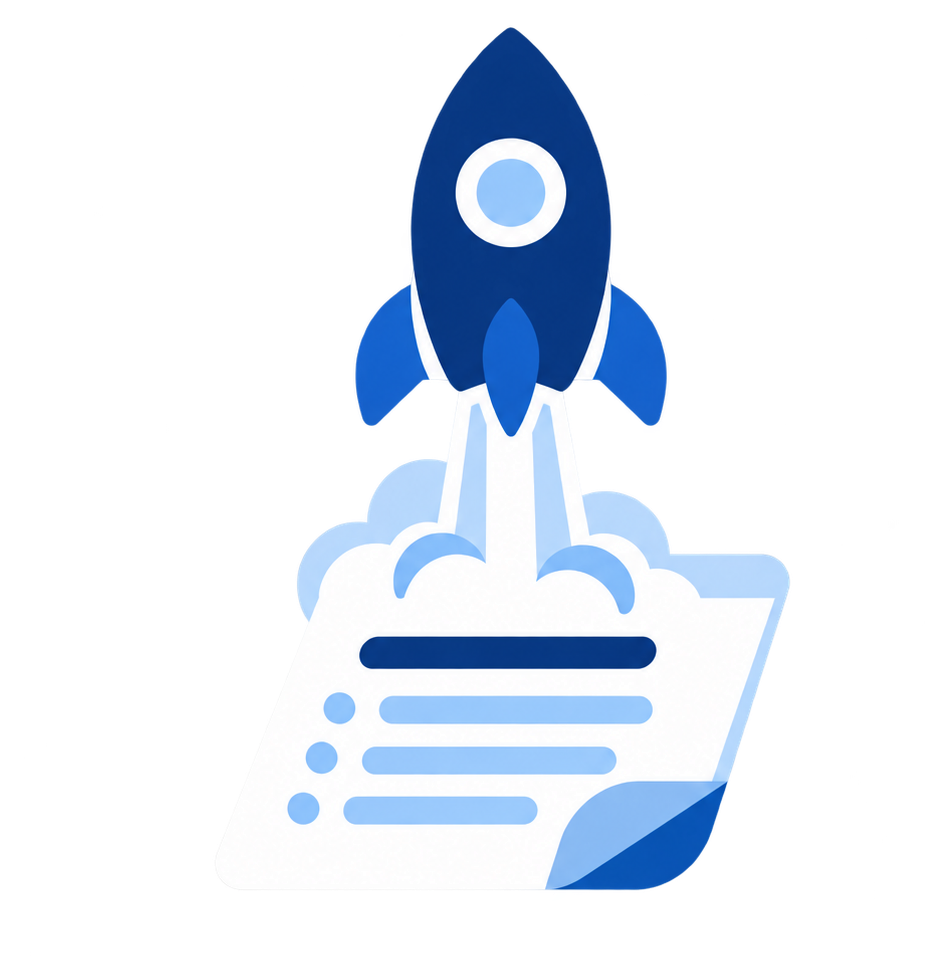

Responda 5 perguntas rápidas e descubra que tipo de empresário você seria. No final, você recebe o Selo de Futuro Administrador, formado pelo ISECENSA.
Um experimento do Curso de Administração — Ise por um dia - 2026
Exemplo de card + botões: